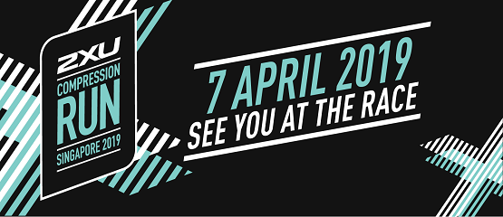

Frequently Asked Questions
Registration
How can I register?
Click here to register.
What am I entitled to as a participant?
Click here to see Runner's Entitlement.
What is the minimum age to participate in the 2XU Compression Run 2019?
- 21.1KM: Participants must be aged 17 years and above as at race day.
- 10KM: Participants must be aged 14 years and above as at race day.
- 5KM: Participants must be aged 12 years and above as at race day.
All participants below the age of 18 are required to seek parental/ guardian consent to participate in the race. Relevant indemnity and declaration fields must be filled up at the point of registration - failing which, the Organiser reserves the right to refuse entry to the participant.
How do I know if my entry has been accepted?
You will receive an email confirmation slip upon your successful registration. Registered participants can also retrieve their confirmation slip on the website.
Do I get a refund if I choose not to participate after registration?
Participants who withdraw from the race before 2359hrs on 31 January 2019 will enjoy a 50% refund of the paid registration fees. Refund will be made via cheque. Withdrawal notifications must be in writing to info@2xucompressionrun.com.sg. Telephone and verbal notifications will not be accepted. Withdrawal after 31 January 2019 will not be accepted and no refund of registration fees paid.
Can I make changes to my personal particulars after registration?
Yes. You can make changes to your particulars by sending us an email before 31 January 2019 to info@2xucompressionrun.com.sg. An administrative fee of $15 shall apply.
Can I transfer my race registration if I wish to withdraw from the race?
All race registrations are strictly non-transferable.
Is GST included in the registration fee?
Yes. All fees are inclusive of GST.
About the Race
When is the 2XU Compression Run 2019?
The 2XU Compression Run will be held on Sunday, 7 April 2019.
Where will the race be held?
The race will be held at F1 Pit Building.
How many race categories are there?
Click here to see Race Categories & Fees.
What is the cut off time for the race?
The cut-off time for each category is:
- 21.1KM: 4 Hours
- 10KM: 2.5 Hours
- 5KM: 1.5 Hour
Participants who do not cross various distance checkpoints at certain timings may be directed to run on footpaths or take an alternative route due to restrictions on road closure timings.
Will I get race timing?
Yes. All participants will get their race timing. Prize winners are based on gun time.
Is there a baggage deposit at the start point?
Yes. There is a baggage deposit area at the start point. Whilst maximum care and security will be enforced, the Organiser will not be responsible for any loss or damaged items or delay in retrieving the bags. Participants are advised to travel light.
Can I skate or cycle during the race?
No.
Can I run barefoot?
No.
Will there be an official photographer?
Yes. Photography and/or videography will be taken during the event for news and publicity purposes by the official photographer and/or videographer, and may be used for print and on online/electronic platforms of Pink Apple Pte Ltd. Pink Apple Pte Ltd owns all rights to the photographs and video recordings. If you do not wish to have any photographs or video recordings taken of you, please inform the Organiser at the event site.
What if I am injured during the race or otherwise unable to finish the race?
Please approach the nearest first aiders deployed along the route. Participants who require immediate medical attention may alert the route marshals.
Pricing & Race Prizes
What are the prices for 2XU Compression Run 2019?
Click here to see Race Categories.
What are the prizes for 2XU Compression Run 2019?
Click here to see the Prize Chart.
